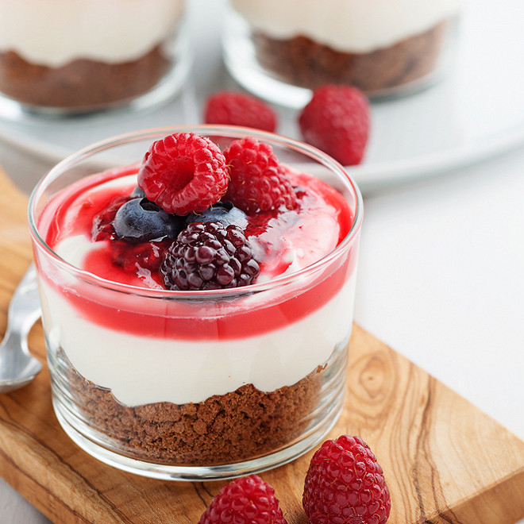
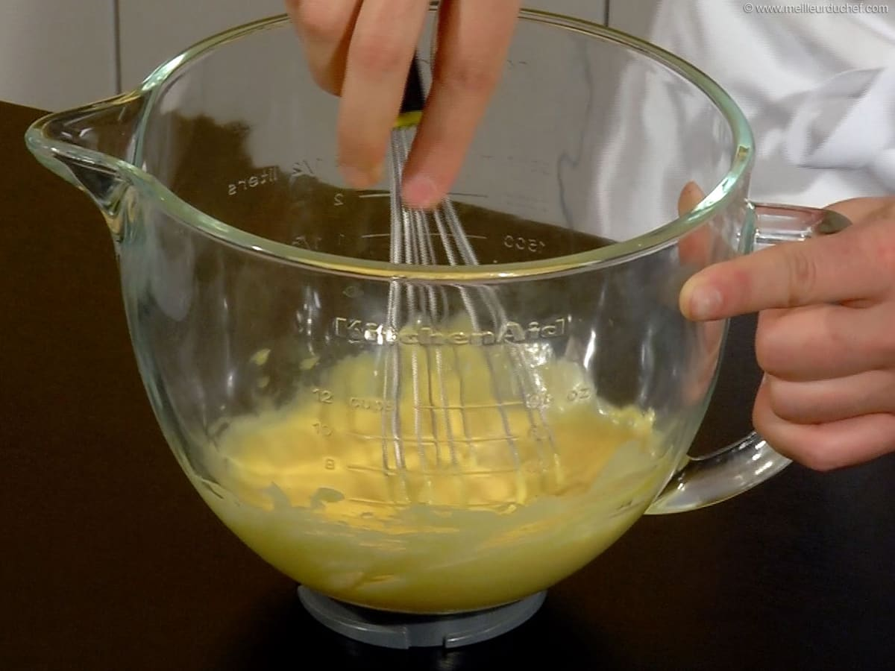
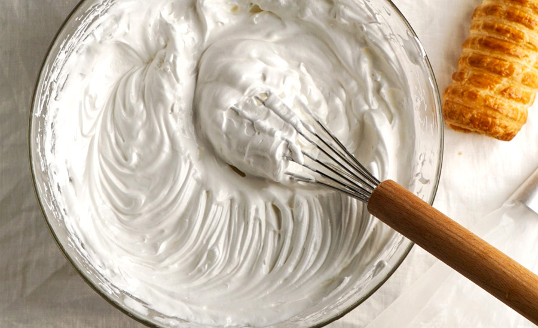
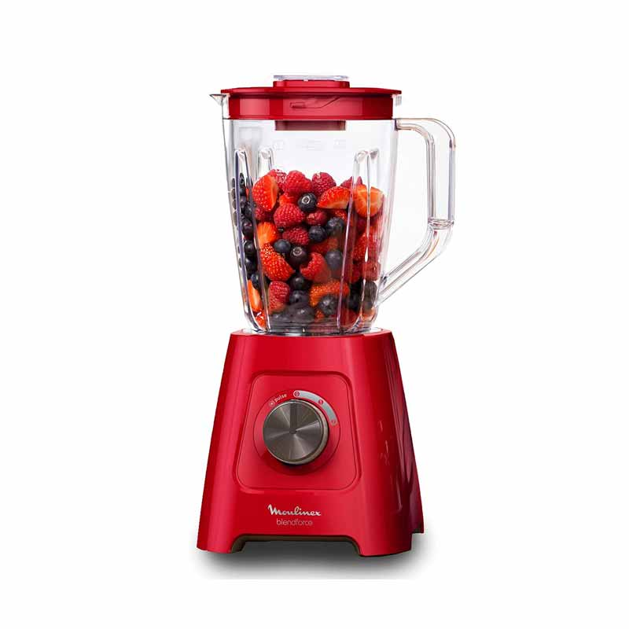
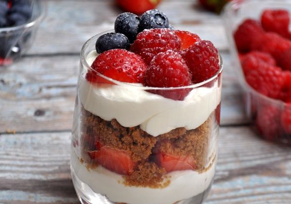
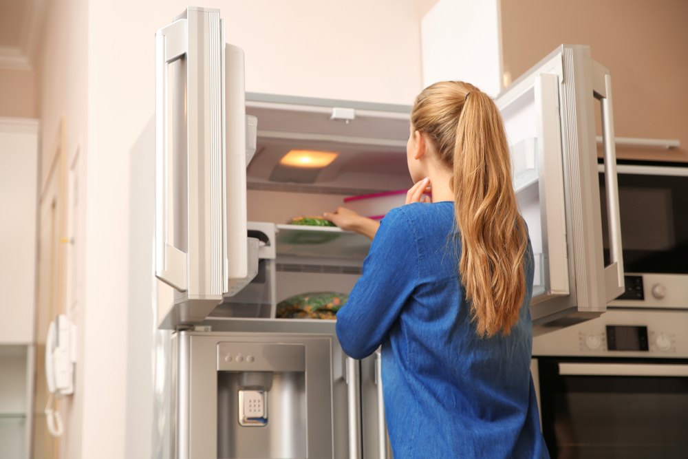

"La cuisine, c'est comme l'amour, on y pénètre avec abandon ou pas du tout."
Harriet Van Horne

Ingrédients
- Sucre
- Oeufs
- Mascarpone
- Gâteaux boudoir
- Fruits rouges
- Sirop de grenadine
Les Etapes
Etape 1 
Battre les jaunes d'œufs avec le sucre jusqu'à obtention d'un mélange mousseux. Ajouter la mascarpone. Mélanger de nouveau.
Etape 2 
battre les blancs en neige. Les incorporer délicatement à la préparation au mascarpone en soulevant la masse pour ne pas casser les blancs.
Etape 3 
prendre les fruits rouges encore surgelés et mettre de coté 200g pour la décoration. mettre le reste dans un hachoir électrique et mixer le tout , ajouter un petit filet de sirop de grenadine pour obtenir un mélange plus onctueux .
Etape 4 
passons au montage : verser du sirop de grenadine dans une assiette creuse et tremper vos gâteaux boudoir assez rapidement , puis disposer les dans un plat de votre choix, mettre une couche de fruits rouges mixés puis mettre quelques fruits rouges entiers et enfin la crème de mascarpone et ainsi de suite , pour la dernière couche étaler la crème de mascarpone , disposer quelques fruits rouge pour la décoration puis ajouter un peu de sirop de grenadine pour le finale.
Etape 5 
Mettre au congélateur 3h minimum .